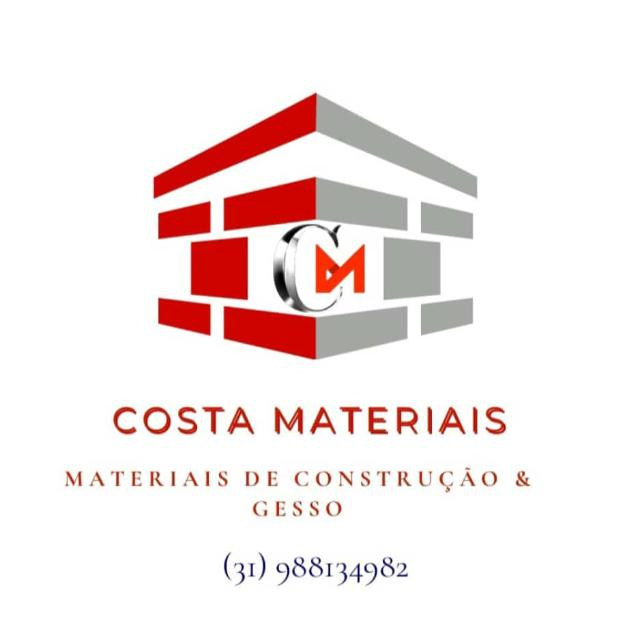

Materiais para construir
Base, estrutura e itens essenciais para sua obra sair do papel com mais segurança.
Materiais de construção & gesso
Do primeiro orçamento ao acabamento, encontre materiais para transformar projeto em realidade — com atendimento próximo e escolhas que fazem sentido para a sua obra.
Construção com mais clareza,
do jeito Costa.

O essencial, bem escolhido
A Costa Materiais reúne soluções para diferentes momentos da construção, com uma experiência simples para você encontrar, comparar e pedir seu orçamento.
Base, estrutura e itens essenciais para sua obra sair do papel com mais segurança.
Detalhes que valorizam o ambiente e deixam o resultado final mais elegante.
Conte o que você precisa e receba uma conversa direta para orientar sua próxima decisão.
Por que a Costa
Você não precisa complicar o que já é importante. A proposta é facilitar a jornada — com informação clara, atenção aos detalhes e um contato que entende o ritmo de quem está construindo.
Uma conversa objetiva para aproximar necessidade, solução e orçamento.
O material certo ajuda a dar mais consistência ao resultado da sua obra.
Fale diretamente com a Costa e descubra o próximo passo com mais tranquilidade.
Um jeito simples de começar
Explique sua necessidade, fase da obra ou ideia de acabamento.
A Costa ajuda a organizar o caminho para o seu orçamento.
Escolha os materiais e siga com a sua obra mais confiante.
Comece por aqui
Fale com a Costa Materiais e transforme sua próxima dúvida em um plano de ação.
Solicitar orçamento ↗